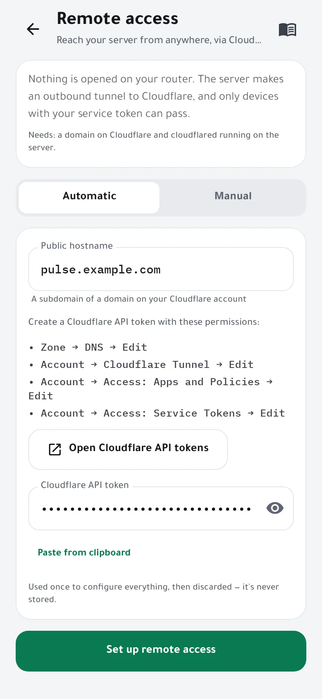
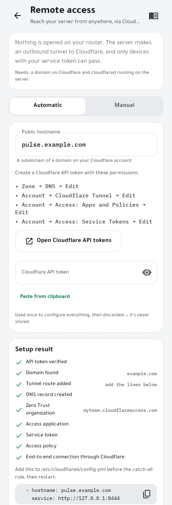
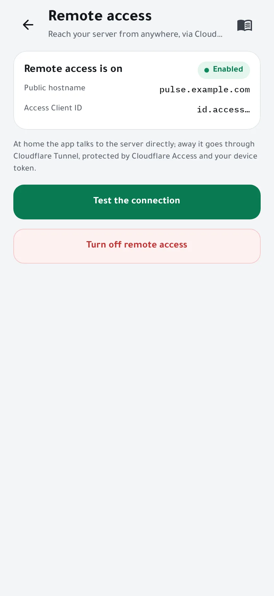
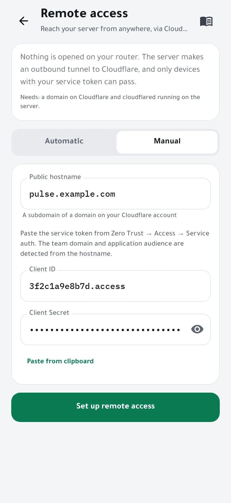

Reach your server from anywhere
At home the app talks to your server directly. Away from home it goes through Cloudflare Tunnel, protected by Cloudflare Access: nothing is opened on your router, and only phones that hold your service token get through. The wizard sets it all up from one Cloudflare API token.
You need
- A domain on your Cloudflare account. The free plan is enough.
cloudflaredrunning a tunnel on the server. Cloudflare explains how in Get started with Cloudflare Tunnel.- An admin phone: the one that installed the agent, or one invited as admin.
-
Choose a public hostname
Open Settings → Remote access and keep Automatic selected. Enter a subdomain of your Cloudflare domain, for example
pulse.example.com. It doesn't need to exist yet.
-
Create a Cloudflare API token
Tap Open Cloudflare API tokens, then Create Token → Create Custom Token, and give it these four permissions:
- Zone → DNS → Edit
- Account → Cloudflare Tunnel → Edit
- Account → Access: Apps and Policies → Edit
- Account → Access: Service Tokens → Edit
Under Zone Resources, pick your domain. Create the token, copy it, and paste it into the wizard.
The token is used once to configure everything, then discarded: it's never stored. You can delete it in Cloudflare afterwards.
-
Set it up
Tap Set up remote access. The agent, on your server, checks the token, finds your domain and tunnel, adds the route and the DNS record, creates an Access application, a service token and a policy, then tests the connection end to end through Cloudflare. Each step shows its result.

-
If your tunnel uses a config file, add the route
Tunnels managed from the Cloudflare dashboard get the route automatically. If yours is configured in
/etc/cloudflared/config.yml, the wizard shows two lines to add: put them before the catch-all rule, then restart cloudflared.ingress: - hostname: pulse.example.com service: http://127.0.0.1:8444 # … your other routes … - service: http_status:404sudo systemctl restart cloudflared
-
Test it
Tap Test the connection: the connection doctor checks every hop and says what to fix if one fails. From now on the app switches by itself between the direct connection at home and Cloudflare outside.

Already have an Access application?
Choose Manual, enter the hostname, and paste the Client ID and Client Secret of a service token from Zero Trust → Access → Service auth. The team domain and application audience are found from the hostname.

If something goes wrong
- “No running tunnel found”
- Install cloudflared and start a tunnel on the server first, then run the wizard again.
- The token is refused
- Check the four permissions above and that Zone Resources include your domain.
- The test fails right after setup
- A new DNS record can take a minute to work. If your tunnel uses config.yml, make sure you added the lines and restarted cloudflared.
- Turning it off
- Turn off remote access makes the agent forget the hostname and service token. The Access application and the DNS record stay in your Cloudflare account until you delete them there.